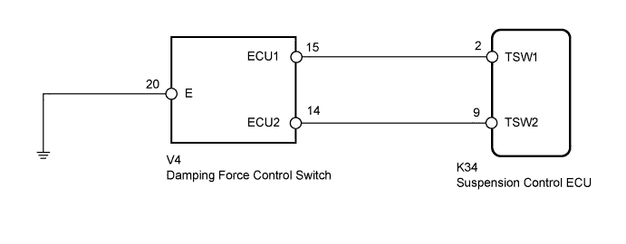
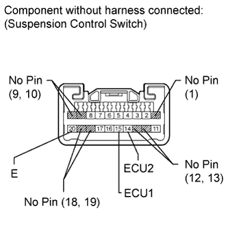
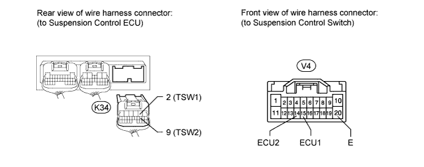

DTC C1791 Absorber Control Switch Circuit (Test Mode DTC) |
| DTC Code | Detection Condition | Trouble Area |
| C1791 | The test mode procedure is performed. |
|

| 1.READ VALUE USING INTELLIGENT TESTER (SPORT SWITCH, COMFORT SWITCH) |
Turn the engine switch off.
Connect the intelligent tester to the DLC3.
Turn the engine switch on (IG) and the tester on.
Enter the following menus: Chassis / AHC / Data List.
According to the display on the tester, read the Data List.
| Tester Display | Measurement Item/Range | Normal Condition | Diagnostic Note |
| SPORT Switch | Damping force control switch (SPORT) / ON or OFF | ON: SPORT OFF: NORMAL or COMFORT | - |
| COMFORT Switch | Damping force control switch (COMFORT) / ON or OFF | ON: COMFORT OFF: NORMAL or SPORT | - |
|
| ||||
| OK | |
| 2.TEST MODE INSPECTION |
Refer to the Test Mode Procedure and perform the signal check. Check that test mode DTC C1791 is cleared (Click here).
| Result | Proceed to |
| DTC C1791 is not cleared | A |
| DTC C1791 is cleared | B |
|
| ||||
| A | ||
| ||
| 3.INSPECT SUSPENSION CONTROL SWITCH (DAMPING FORCE CONTROL SWITCH) |
Remove the suspension control switch (Click here).
 |
Measure the resistance according to the value(s) in the table below.
| Tester Connection | Switch Condition | Specified Condition |
| 14 (ECU2) - 20 (E) | COMF | Below 1 Ω |
| Except COMF | 10 kΩ or higher | |
| 15 (ECU1) - 20 (E) | SPORT | Below 1 Ω |
| Except SPORT | 10 kΩ or higher |
|
| ||||
| OK | |
| 4.CHECK HARNESS AND CONNECTOR (SUSPENSION CONTROL ECU - SWITCH AND BODY GROUND) |

Disconnect the K34 ECU connector.
Disconnect the V4 switch connector.
Measure the resistance according to the value(s) in the table below.
| Tester Connection | Condition | Specified Condition |
| K34-2 (TSW1) - V4-15 (ECU1) | Always | Below 1 Ω |
| K34-2 (TSW1) - Body ground | Always | 10 kΩ or higher |
| K34-9 (TSW2) - V4-14 (ECU2) | Always | Below 1 Ω |
| K34-9 (TSW2) - Body ground | Always | 10 kΩ or higher |
| V4-20 (E) - Body ground | Always | Below 1 Ω |
|
| ||||
| OK | ||
| ||